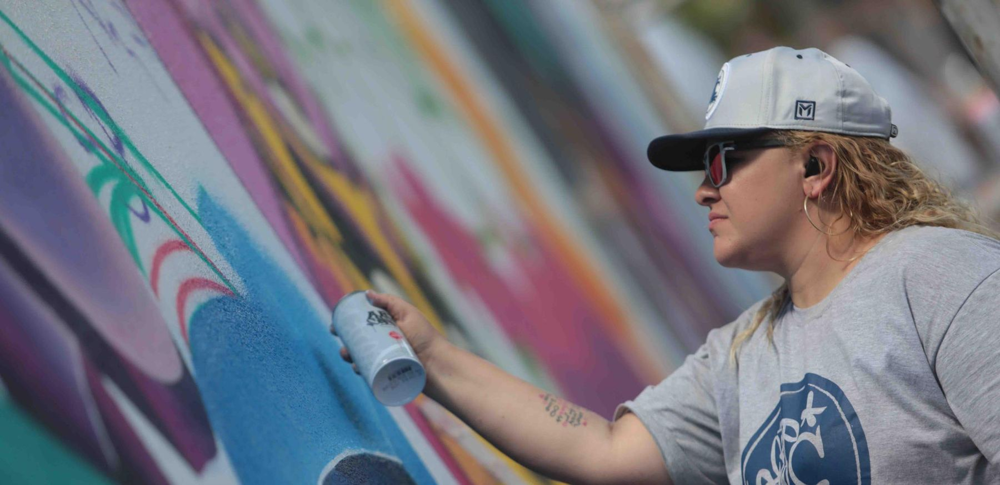
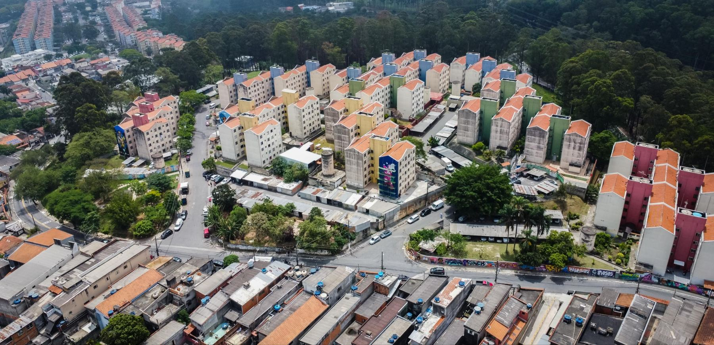
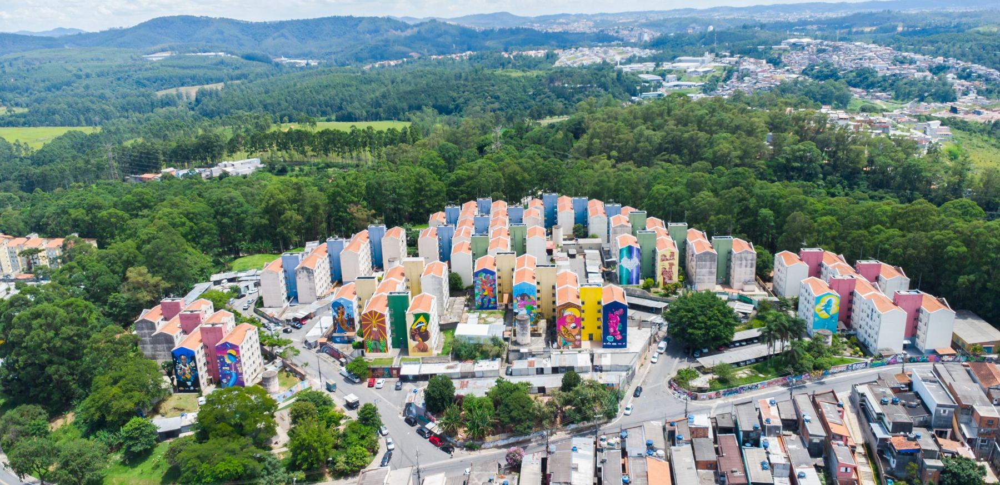

Entrevistas


Na mídia
Bate-papo com graffiti
História ADZ
Gestão executiva e curadoria de arte urbana em grande escala. Empenas monumentais, festivais e coletivos, com rigor técnico, segurança e impacto no território.

ADZ One (ou ADZ Mestres) é grafiteira, arte-educadora e produtora cultural, com mais de 20 anos de experiência na cultura Hip Hop. Formada em Marketing e Coordenação Cultural pelo Senac, atua na promoção do graffiti feminino e em projetos de revitalização urbana.
À frente da ADZ PROD, coordena coletivos, faz curadoria e viabiliza murais de larga escala com rigor administrativo, segurança operacional (NR-35) e excelência estética, com forte atuação em Diadema e na Região Metropolitana de São Paulo.
Vamos conversarProdução executiva de pinturas em altura, com logística de andaimes e balancins e equipe certificada NR-35.
Seleção e coordenação de artistas, do mural individual a festivais com mais de 100 participantes.
Parcerias com o poder público, editais (como o MAR) e autorizações em equipamentos culturais.
Murais com Braille e audiodescrição, reaproveitamento de materiais e lonas recicladas.
Produção das empenas no conjunto habitacional de Perus (SP). Arraste para comparar como o território virou uma galeria a céu aberto.


AntesDepoisParticipação em festivais e encontros de graffiti em diferentes estados, levando a assinatura ADZ para muros de norte a sul.
Oficinas, curadoria e projetos que levam o graffiti para bibliotecas, centros de juventude e equipamentos de saúde.
Empenas, festivais, oficinas ou projetos via edital. Conte sua ideia e a ADZ PROD monta a produção completa.